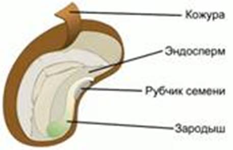
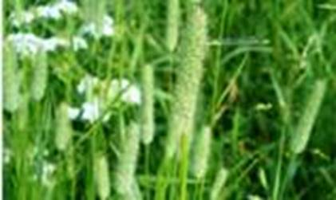
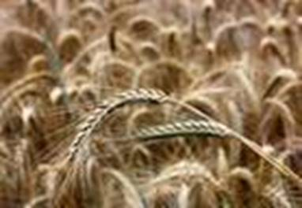
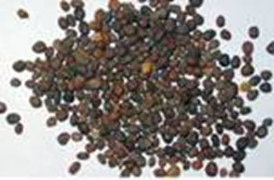
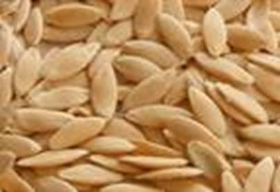
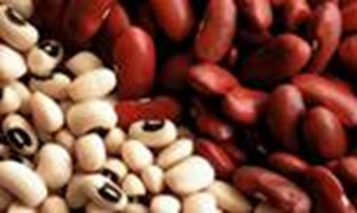

Семя – зачаток взрослого растения. При помощи семян, заключенных в плодах, покрытосеменные растения размножаются. Зародыш может впадать в состояние покоя, что позволяет ему переносить неблагоприятные условия.
Прорастание – процесс перехода семени из состояния покоя в вегетативный рост зародыша и формирования из него проростка.
Прорасти способны только семена, в которых сохранен в живых зародыш (см. Рис. 1).

Рис. 1. Строение семени
Семена могут стать невсхожими под воздействием вредителей, болезней, температур, высокой влажности, слишком длительного хранения.
Набухание – процесс поглощения растением поступающей внутрь воды, предшествует прорастанию.
После набухания молодой корень разрывает кожуру и выходит наружу. Затем начинает расти зародышевый стебелек и выносит над поверхностью почвы семядоли (надземный тип прорастания). Это происходит у фасоли, тыквы, клена. Из зародышевой почечки развиваются надземный стебель и настоящие листья.
У гороха, дуба семядоли остаются в почве (подземный тип прорастания). Надземный побег развивается из почечки зародыша.
Для прорастания семян необходимы определенные количество воды и температура.
Для растений разных видов условия прорастания семян отличаются.
Клетки зародыша могут потреблять вещества только в растворах. Для прорастания семян разных растений необходимо разное количество воды, так, семена гороха или фасоли могут поглотить в 1,5 раза больше воды, чем их вес, а зерновкам проса воды необходимо около четверти от их массы.
Клетки зародыша требуют постоянного притока кислорода. Семена растений заболоченных мест обитания (рис, тимофеевка луговая (см. Рис. 2)) способны прорастать под водой. Для этого им требуется небольшое количество кислорода.

Рис. 2. Тимофеевка луговая
Скорость обмена веществ зародыша зависит от температуры. Поэтому для прорастания растений необходимо тепло. Рожь (см. Рис. 3) может прорастать при температуре чуть выше 0. А семена растений южных широт прорастают только при температуре +10-15 градусов.

Рис. 3. Рожь
Для каждой культуры характерны свои сроки посева. До прорастания зародыш не способен к фотосинтезу и питается только веществами, хранящимися в семени. Поэтому для посева необходимо брать крупные полновесные семена.
Семена холодостойких растений (пшеница, редис, горох) высевают ранней весной. Их проростки устойчивы к заморозкам. Теплолюбивые растения (кукуруза, фасоль, огурцы, томаты) высевают позже, когда воздух и почва прогреются.
При задержке посева молодые растения будут страдать от недостатка влаги в почве.
При неглубоком расположении семян в почве они высыхают из-за нехватки влаги. При слишком глубокой посадке проросток будет испытывать нехватку воздуха. Для каждого вида растения рекомендуемая глубина посадки различна. Она зависит от размера семян и типа почвы. Крупные семена можно сажать глубоко, так как у них достаточное количество питательных веществ. При поверхностной посадке семена поедаются птицами.
Семена репы (см. Рис. 4) или лука необходимо сажать на глубине 1-2 см.

Рис. 4. Семена репы
Семена средних размеров (редиса, огурцов (см. Рис. 5)) сажают на глубину 2-4 см.

Рис. 5. Семена огурца
Крупные семена (бобы, фасоль (см. Рис. 6)) сажают на глубину 4-5 см.

Рис. 6. Семена фасоли
На песчаной почве воздух проникает на большую глубину, и влага также сохраняется в глубоких слоях. Поэтому семена надо сажать глубоко.
Глинистая почва содержит мало воздуха и много влаги у поверхности. Семена надо сажать не глубоко.
Клетки зародыша питаются, делятся и растут. Зародыш превращается в проросток.
При прорастании первым развивается корешок, и в своем развитии опережает другие органы. Пока проросток не начинает фотосинтезировать, для его роста и развития используются органические вещества, заключенные в семени. При их нехватке растение вырастает слабым или гибнет.
Положите увлаженные семена фасоли и зерновки пшеницы в банки с опилками и следите за их прорастанием. По мере необходимости увлажняйте опилки водой. Каждый день вынимайте из опилок по одному проростку фасоли и пшеницы. Засушивайте их, фиксируя возраст. Через 15-18 дней опыт прекратите. Из засушенных растений соберите коллекцию, показывающую развитие семян.
Для высокого урожая сельскохозяйственной культуры необходимо, чтоб на единицу площади приходилось определенное количество растений. Для этого необходимо знать всхожесть семян – количество семян, которые прорастут.
Возьмите пробу в 100 зерновок ржи, кукурузы или пшеницы. Поместите семена в тарелки на слой влажного полотна или бумаги. Накройте тарелки стеклом для предотвращения испарения влаги. Подсчитайте количество проросших семян за первые 10 дней. Эта цифра – процент всхожести. В норме она не должна быть меньше 95%.
Семена многих растений умеренных широт приобретают способность к прорастанию только после периода нахождения в холодном и влажном месте. Это необходимо для предотвращения прорастания семян осенью. Иначе холод убьет проростки.
Стратификация – длительное удерживание семян в условиях низких температур.
Вымерзание для разных видов растений происходит при разных температурах. Так, для томата это -1, а для ячменя – -10.
Список литературы
1. Биология. Бактерии, грибы, растения. 6 кл.: учеб. для общеобразоват. учреждений / В.В. Пасечник. – 14-е изд., стереотип. – М.: Дрофа, 2011. – 304 с.: ил.
2. Тихонова Е.Т., Романова Н.И. Биология, 6. – М.: Русское слово.
3. Исаева Т.А., Романова Н.И. Биология, 6. – М.: Русское слово.
Дополнительные рекомендованные ссылки на ресурсы сети Интернет
1. Referat.business-top.info (Источник).
2. Scienceland.info (Источник).
3. Fizrast.ru (Источник).
Домашнее задание
1. Биология. Бактерии, грибы, растения. 6 кл.: учеб. для общеобразоват. учреждений / В.В. Пасечник. – 14-е изд., стереотип. – М.: Дрофа, 2011. – 304 с.: ил. – с. 186, задания и вопросы 5, 7 (Источник).
2. Что такое набухание семян?
3. Какие условия необходимы для прорастания семян?
4. * Подумайте, как будет развиваться семя двудольного растения, лишенное одной из семядолей? Как будет развиваться семя однодольного растения, лишенное эндосперма? Будет ли вообще развитие в этих случаях? Ответ обоснуйте.